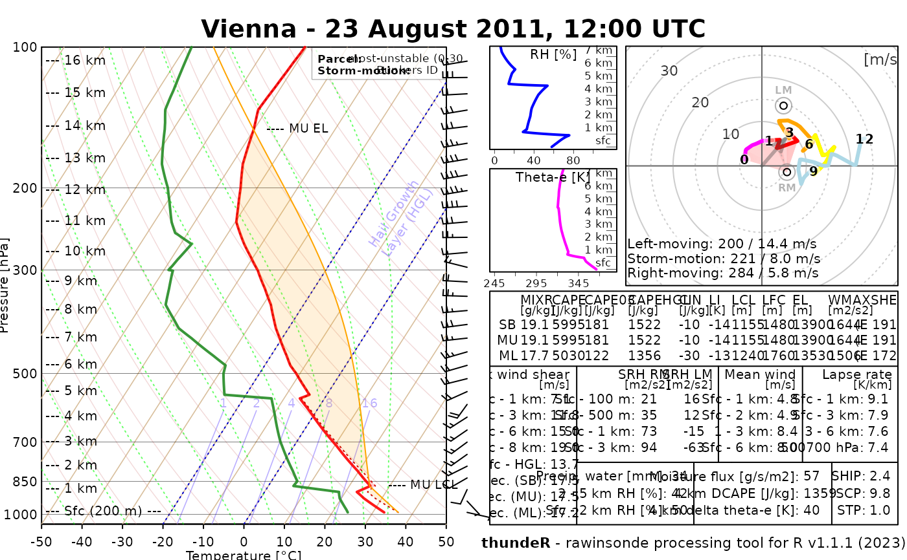

R/sounding_plot.R
sounding_plot.RdFunction to plot a composite graphics with Skew-T, hodograph and selected convective parameters on a single layout
pressure [hPa]
altitude [m] (can be above sea level or above ground level as function always consider first level as surface, i.e h = 0 m) - altitude [meters]
temperature [degree Celsius]
dew point temperature [degree Celsius]
wind direction [azimuth in degrees]
wind speed [knots]
title to be added in the layout's header
parcel tracing on Skew-T for "MU", "ML" or "SB" parcel, "none" for no parcel line.
range of the hodograph to be drawn, 25 m/s used as default
logical, plotting area of parcel's positive (yellow) or negative (red) buoyancy (default = TRUE)
draws polygon for storm-relative helicity, available options are "0500m", "01km", "03km", "36km", "none", "03km" used as default
draws downdraft parcel and polygon of downdraft's negative buoyancy (default = FALSE)
(optional) vector of length 2 for bottom and top heights used for computing parcel starting parameters; default: 0, 500
(optional) for moving storms only - one can define vector of length two with wind speed [m/s] and wind directions [degrees] that will be used to compute adjusted SRH parameters
extra graphical arguments to be added
panel of Skew-T, hodograph and table with convective indices drawn on a pre-defined single layout
data("sounding_vienna")
sounding_vienna = na.omit(sounding_vienna)
sounding_plot(sounding_vienna$pressure, sounding_vienna$altitude,
sounding_vienna$temp, sounding_vienna$dpt,
sounding_vienna$wd, sounding_vienna$ws,
parcel = "MU", title = "Vienna - 23 August 2011, 12:00 UTC"
)
#> Your display device is 7 x 7 in.
#> It is recommended to use at least 10 x 7.5 in. plotting window
#> or consider saving the layout into file
